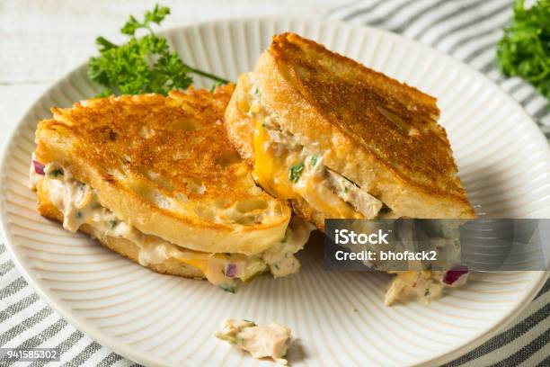

Tuna Melt Recipe
Home

Tuna melt end product
A tuna melt is a warm, savory sandwich made with a mixture of tuna
salad—typically tuna, mayonnaise, and seasonings—topped with melted
cheese. It's usually served on toasted bread, often grilled or broiled
until the cheese is bubbly and golden. Popular cheese choices
include cheddar or Swiss, and it can be made open-faced or as a closed
sandwich.
Ingrediants
- 1 can of tuna
- 2 tablespoons mayonnaise
- 1 teaspoon mustard
- Salt and peper to taste
- 2 slices of sourdough bread
- 2 slices of swiss cheese
- Butter
Instructions
- Mix drained tuna with mayonnaise, mustard, salt and pepper
- Spread tuna salad on one slice of bread top with cheese and top
with second slice of bread
- Butter bread
- Cook sandwich on skillet over medium heat for 2-3 minutes
- serve and enjoy